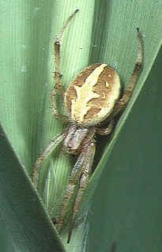

थीस की गोल-जाला मकड़ीTheis's Orb-weaver
Neoscona theisi · Araneidae · SPD-0047

- Scientific name वैज्ञानिक नाम
- Neoscona theisi (Walckenaer, 1841)
- Family कुल
- Araneidae
- Hindi हिंदी
- थीस की गोल-जाला मकड़ी
- Local names स्थानीय नाम
- theis's orb-weaver, theis orb weaver, neoscona theisi
- Status here यहाँ की स्थिति
- native
- Movement आवागमन
- Resident, here all year
- Known from कहाँ दर्ज
- Others have published records from the wider Awadh–Purvanchal plain, none yet from Basti–Ayodhya अवध–पूर्वांचल से दूसरों के प्रकाशित अभिलेख, बस्ती–अयोध्या से अभी नहीं
- IUCN IUCN
- not evaluated
- Review समीक्षा
- not yet reviewed
When to look कब देखें
Present all year. साल भर मौजूद।
Uses and possibilities उपयोग और संभावनाएँ
Drawn from the documented uses in the profile below, where each is labelled traditional, current or a research lead. All uses →
Tell it apart from इनसे अलग पहचानें
थीस की गोल-जाला मकड़ी / Theis's Orb-weaver
Neoscona theisi (Walckenaer, 1841) — Araneidae
थीस की गोल-जाला मकड़ी — फसलों, बगीचों और झाड़ियों में पाई जाने वाली एक रात्रिचर गोल-जाला मकड़ी, जिसके पेट की पीठ पर हल्के पीले रंग की चौड़ी धारी और गहरे भूरे रंग की लहरदार सीमाएं होती हैं।
Quick Identification त्वरित पहचान
| Feature | Description |
|---|---|
| Abdomen pattern | Conspicuous creamy-yellow median longitudinal band (folium) bordered by wavy black lines |
| Ventral markings | Deep blackish patch enclosed between two distinct bright yellow comma-shaped spots |
| Carapace | Yellowish-brown to reddish-brown with a narrow dark brown median line |
| Legs | Yellowish-brown, heavily banded with dark brown or blackish annulations and stiff spines |
| Web habit | Constructs a large vertical sticky orb web at dusk and rests in a curled leaf retreat by day |
Medium-sized nocturnal orb-weaving spider characterized by a pale creamy-yellow longitudinal folium pattern along the dorsal midline of the oval abdomen, framed by undulating dark brown and black margins. The ventral abdomen features a distinct dark rectangular area bordered by two yellow comma-shaped spots. It spins a large vertical orb web in the evening, retreating during daylight into a silk-lined curled leaf shelter at the edge of the web.
हिंदी: रात में सक्रिय रहने वाली गोल-जाला मकड़ी जिसके पेट पर पीले रंग की चौड़ी धारी और काले घुमावदार किनारे होते हैं। पेट के नीचे दो पीले अल्पविराम (कॉमा) जैसे निशान होते हैं। दिन में यह पत्ती में छिपती है।
Morphology शारीरिक संरचना
| Feature | Description | Source |
|---|---|---|
| Abdomen shape | Sub-oval, slightly wider anteriorly, rounded at both ends without humps | Tikader (1982) |
| Epigyne structure | Epigyne with a prominent, slender, curved scape projecting backwards | Sebastian & Peter (2009) |
The female abdomen is sub-oval, slightly broader near the base and tapering gently towards the spinnerets. The dorsal surface features a prominent, pale yellowish-white median band (folium) with deeply scalloped blackish-brown margins, bordered laterally by mottled greyish-brown and yellow tones. The ventral surface carries a square black patch flanked by two yellow comma-shaped spots. The cephalothorax is yellowish-brown, covered with fine pale pubescence, with a distinct dark longitudinal line in the median groove. Legs are yellowish-brown with dark brown bands and sharp spines. The male is smaller, with longer, more slender legs, modified spines on tibia II, and complex pedipalps with a prominent conductor.
हिंदी: पेट पर एक चौड़ी पीली-सफेद लहरदार पट्टी होती है। टांगों पर भूरे रंग के छल्ले और बारीक कांटे होते हैं। नर का आकार छोटा होता है।
Behaviour & Ecology व्यवहार एवं पारिस्थितिकी
A predominantly nocturnal orb-weaver. At dusk, it emerges from its daytime retreat—a curled dead or living leaf linked to the web frame by a strong signal thread—and repairs or completely rebuilds its large, vertical, fine-meshed orb web. The spider hangs head-down at the center of the web throughout the night, monitoring vibrations created by entangling insects. Before daybreak, it frequently ingests the sticky silk spiral threads to recycle precious proteins, retreating to its leafy hideout to escape diurnal visual predators.
हिंदी: यह मुख्य रूप से रात में सक्रिय होती है। शाम ढलते ही यह अपना बड़ा गोल जाला बनाती है और केंद्र में उल्टी लटकती है। सुबह होने से पहले यह अक्सर जाले का चिपचिपा रेशम खाकर पत्ती के मांद में छिप जाती है।
Life Cycle / Phenology जीवन चक्र एवं फेनोलॉजी
Present as adults from June to December across northern India, reaching peak maturity and reproductive activity between August and October (Sebastian & Peter 2009). The male cautiously vibrates the frame threads of the female's web to announce his presence and avoid being treated as prey. Following successful copulation, the female produces one to two round, fluffy egg sacs wrapped in yellowish-brown silk (Tikader 1982). Each egg sac contains 70 to 120 spherical eggs (Tikader 1982). She fastens the egg sac securely inside her leaf retreat, where she guards it until autumn (Tikader 1982).
हिंदी: वर्षा और शरद ऋतु में इसका प्रजनन चरम पर होता है। मादा मुड़ी हुई पत्ती के भीतर रेशम की थैली बनाकर 70 से 120 अंडे देती है (Tikader 1982)। वह अंडों की रखवाली करती है और बच्चे शरद में बाहर निकलते हैं।
Host Plants or Prey आहार एवं शिकार
Strictly insectivorous nocturnal web-predator. Its expansive, sticky orb webs capture a wide variety of night-flying insects, especially nocturnal lepidopteran moths (Noctuidae, Pyralidae), mosquitoes, chironomid midges, flying termites, plant bugs, leafhoppers, and small nocturnal beetles. When a large moth hits the web, the spider rapidly rotates it using its hind legs while wrapping it in dense silk ribbons before delivering a paralyzing bite.
हिंदी: इसका मुख्य भोजन रात में उड़ने वाले कीड़े हैं, विशेष रूप से फसलों को नुकसान पहुंचाने वाले रात के पतंगे, मच्छर, दीमक और भृंग। यह जाले में फंसे पतंगे को रेशम से कसकर बांधकर निश्चेत कर देती है।
Predators / Natural Enemies प्राकृतिक शत्रु एवं शिकारी
Major natural enemies include spider-hunting mud-dauber wasps (Sphecidae), assassin bugs (Reduviidae), praying mantises, and nocturnal predators such as geckos (Hemidactylus) and small insectivorous bats. By day, birds such as the Rufous Treepie (Dendrocitta vagabunda) and babblers occasionally search curled leaves for sheltering spiders. The cryptic folium pattern provides excellent camouflage against dead foliage.
हिंदी: छिपकलियां और चमगादड़ रात में जाले के पास इसका शिकार करते हैं। दिन में छिपने के दौरान ततैया और पेड़ पर कीड़े तलाशने वाले पक्षी जैसे महोख और बैबलर इसे ढूंढ़कर खा जाते हैं।
Agricultural / Human Relevance कृषि एवं मानव उपयोगिता
An invaluable biological control agent in northern Indian agricultural landscapes, particularly in sugarcane, cotton, and paddy agroecosystems. Because it hunts at night, it consumes immense numbers of nocturnal agricultural pest moths whose larvae are destructive bollworms, stem borers, and armyworms. It is entirely non-aggressive, non-toxic to humans, and beneficial to rural crop protection.
हिंदी: यह गन्ना, कपास और धान की फसलों के लिए बहुत लाभकारी मित्र जीव है क्योंकि यह रात में फसलों के तना छेदक और इल्लियों वाले पतंगों को जाले में पकड़ती है। यह मानव स्वास्थ्य के लिए बिल्कुल सुरक्षित है।
Expected Locally क्षेत्रीय संभावना
Not a field record. Written from published accounts for eastern Uttar Pradesh. No confirmed local sighting yet — if you have seen it, that is what the atlas needs.
अभी तक स्थानीय पुष्टि नहीं। यह विवरण प्रकाशित स्रोतों से है, किसी अवलोकन से नहीं।
GBIF holds published records across the agricultural plains and garden habitats of eastern Uttar Pradesh. It is expected in orchards, sugarcane fields, village gardens, and canal-side hedges across the Ghaghara, Kuwana, and Rapti river basins. A confirmed local record requires a clear photograph of the dorsal abdominal folium pattern and ventral yellow comma spots along with observation date and location.
हिंदी: यह पूर्वी उत्तर प्रदेश के गन्ने के खेतों, बगीचों और झाड़ियों में संभावित है। पुष्टि के लिए पीठ की चौड़ी पीली धारी और पेट के निचले पीले निशानों को दर्शाने वाली स्पष्ट तस्वीर चाहिए।
Distribution वितरण
Broadly distributed throughout the tropical and subtropical regions of Asia, Australia, and the Pacific islands, from India and Sri Lanka across Southeast Asia to China and Japan. In India, it is widespread across northern, central, and southern states.
हिंदी: यह पूरे भारत, श्रीलंका, चीन, जापान, दक्षिण-पूर्व एशिया और ऑस्ट्रेलिया में पाई जाती है। भारत के मैदानी भागों में यह फसलों और बागों में बहुतायत से मिलती है।
Research Questions शोध प्रश्न
- How many nocturnal pest moths (e.g., Spodoptera litura and Helicoverpa armigera) does a single adult female consume per night in sugarcane fields?
- What environmental cues trigger the daily recycling (ingestion) of the sticky spiral silk before sunrise?
- How does the presence of synthetic pyrethroid insecticides affect web-spinning behavior and structural geometry?
- What structural characteristics make a leaf retreat ideal for protection against high diurnal temperatures?
- क्या यह फसलों में लगने वाले रात के हानिकारक पतंगों की संख्या को नियंत्रित करने में महत्वपूर्ण भूमिका निभाती है?
- क्या दिन में पत्ती के मांद में छिपने से यह पक्षियों और तेज धूप से पूरी तरह सुरक्षित रहती है?
Similar Species समान प्रजातियाँ
| Similar species | Distinction | Hindi distinction | |
|---|---|---|---|
| Kidney Garden Spider \ | Araneus mitificus | Pale green abdomen with a distinct black kidney-shaped patch near posterior end; smaller size | किडनी गार्डन मकड़ी का पेट हल्का हरा होता है जिस पर गुर्दे के आकार का काला धब्बा होता है |
| Garden Cross Spider \ | Argiope pulchella | Pentagonal yellow and black banded abdomen; diurnal hunter resting on web stabilimentum | गार्डन क्रॉस मकड़ी का पेट पंचकोणीय और पीली-काली धारियों वाला होता है; यह दिन में जाले पर बैठती है |
| Tropical Tent-web Spider \ | Cyrtophora citricola | Highly tuberculated abdomen with prominent bifurcated humps; non-sticky horizontal tent-web | ट्रॉपिकल टेंट-वेब मकड़ी के पेट पर कांटेदार कूबड़ होते हैं और यह तंबूनुमा जाला बनाती है |
Field rule: Nocturnal orb-weaver with pale creamy-yellow wavy folium along dorsal midline of abdomen and two yellow comma spots beneath.
हिंदी: रात में गोल जाला बनाने वाली मकड़ी जिसके पेट की पीठ पर चौड़ी पीली लहरदार पट्टी और पेट के नीचे दो पीले अल्पविराम जैसे धब्बे हों।
Taxonomy & Classification वर्गिकी एवं वर्गीकरण
Original description. Walckenaer (1841), Histoire naturelle des Insects. Aptères, 2, p. 53; type locality: Guam, Mariana Islands.
Subspecies. Monotypic species throughout its expansive Indo-Pacific range.
Family and order placement. Placed in the true orb-weaver family Araneidae, order Araneae, class Arachnida.
IUCN status rationale. Not evaluated by the IUCN Red List; an abundant and globally resilient orb-weaver across agroecosystems.
हिंदी: वाल्कनेयर ने 1841 में इसका पहला वैज्ञानिक विवरण दिया था। यह अरानेइडे कुल की सदस्य है और दुनिया के सभी गर्म कृषि क्षेत्रों में सामान्य रूप से पाई जाती है।
Photo Gallery फोटो गैलरी
No photos yet — add field photos to media/species/theiss_orb_weaver/ and run node scripts/sync_photos.js.
Photos needed आवश्यक फोटो
- [ ] Female hanging in the center of nocturnal vertical orb web displaying dorsal folium (रात में जाले के केंद्र में लटकी मादा की पीठ की पीली धारी का दृश्य)
- [ ] Ventral view highlighting square black patch and two yellow comma-shaped spots (पेट के निचले हिस्से पर काले धब्बे और दो पीले अल्पविराम निशानों का क्लोज-अप)
- [ ] Daytime retreat inside a silk-bound curled leaf at the edge of vegetation (पत्ती के भीतर रेशम से बने दिन के मांद में छिपने का दृश्य)
- [ ] Detail of legs displaying dark brown annulations and spines (टांगों पर गहरे भूरे छल्लों और कांटों का सूक्ष्म दृश्य)
- [ ] Female wrapping a captured nocturnal moth in sheets of silk (जाले में फंसे रात के पतंगे को रेशम में लपेटती मादा मकड़ी)
- [ ] Typical agricultural field habitat in sugarcane or vegetable plot (गन्ने या सब्जी के खेत का प्राकृतिक कृषि परिदृश्य)
- [ ] Macro detail of female epigynal scape in ventral view (मादा के एपिजाइन की सूक्ष्म संरचना का क्लोज-अप दृश्य)
- [ ] Subadult resting on bark twig during daylight hours (दिन के समय पेड़ की टहनी पर छिपती किशोर मकड़ी)
References संदर्भ
- Original description: Walckenaer, 1841 — see GBIF.
- Tikader, B. K. (1982). Fauna of India: Araneae: Vol. II: Araneidae and Gnaphosidae. Zoological Survey of India, Calcutta.
- Sebastian, P. A. & Peter, K. V. (2009). Spiders of India. Universities Press, Hyderabad.
- GBIF Occurrence Data — Neoscona theisi, India (2025).
Source file: species/fauna/spiders/theiss_orb_weaver.md